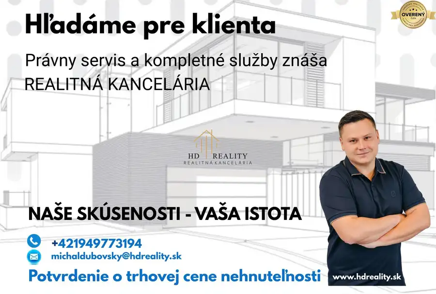

Kúpa · Rodinné domy
Kúpa rodinného domu, Dunajská Streda
Dunajská Streda
300 000 €2 308 € za m²
- Plocha130 m²
- Stavpo rekonštrukcii
O nehnuteľnosti
Pre konkrétneho klienta hľadáme rodinný dom priamo v Dunajskej Strede, prípadne v blízkom okolí do 300.000EUR. Podmienka je obytná plocha okolo 130m2. Za každú ponuku Vám budem vďačný.
Celý právny servis vrátene poplatkov platí realitná kancelária , prevod nehnuteľnosti zabezpečený cez advokátsku kanceláriu.
Prenechajte predaj nehnuteľnosti nám, aby ste mali istotu, že sa o všetko postaráme.
Predajte rýchlo, bezpečne a za najlepšiu cenu.
Parametre
| Úžitková plocha | 130 m² |
|---|---|
| Stav | po rekonštrukcii |
| Dátum zverejnenia | 28. 7. 2025 |
Kde to je
Ďalšie ponuky
Celá ponukaMohlo by Vás zaujímať
 Rodinné domy
400 000 €Kúpa rodinného domu, Senec
Dunajská Lužná
130 m²
Pre konkrétneho klienta hľadáme rodinný dom priamo v Dunajskej Lužnej , prípadne v blízkom okolí do 400.000EUR. Podmienka je obytná plocha okolo…
Rodinné domy
400 000 €Kúpa rodinného domu, Senec
Dunajská Lužná
130 m²
Pre konkrétneho klienta hľadáme rodinný dom priamo v Dunajskej Lužnej , prípadne v blízkom okolí do 400.000EUR. Podmienka je obytná plocha okolo…

Rodinné domy 300 000 €Kúpa rodinného domu, Dunajská Streda Šamorín 130 m² Pre konkrétneho klienta hľadáme rodinný dom priamo v Šamoríne, prípadne v blízkom okolí do 300.000EUR. Podmienka je obytná plocha okolo 130m2. Za… Byt
200 000 €Kúpa 3-izbového bytu, Pezinok
Pezinok
3-izbový60 m²
Pre konkrétneho klienta hľadáme prerobený 3 izbový byt priamo v Pezinku, prípadne v blízkom okolí do 200000EUR. Za každú ponuku Vám budem vďačný.…
Byt
200 000 €Kúpa 3-izbového bytu, Pezinok
Pezinok
3-izbový60 m²
Pre konkrétneho klienta hľadáme prerobený 3 izbový byt priamo v Pezinku, prípadne v blízkom okolí do 200000EUR. Za každú ponuku Vám budem vďačný.…